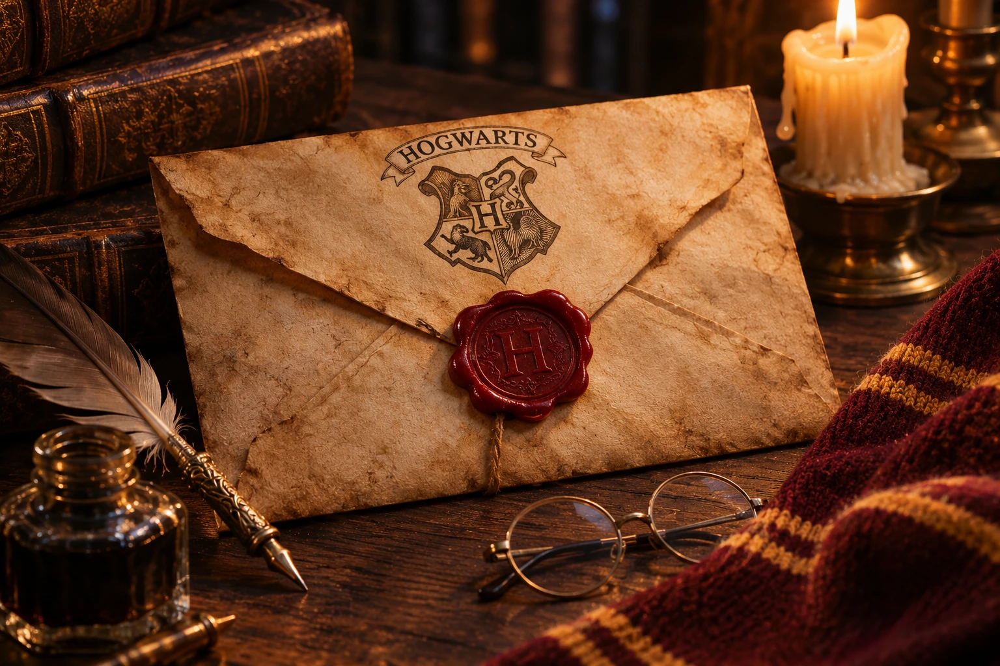
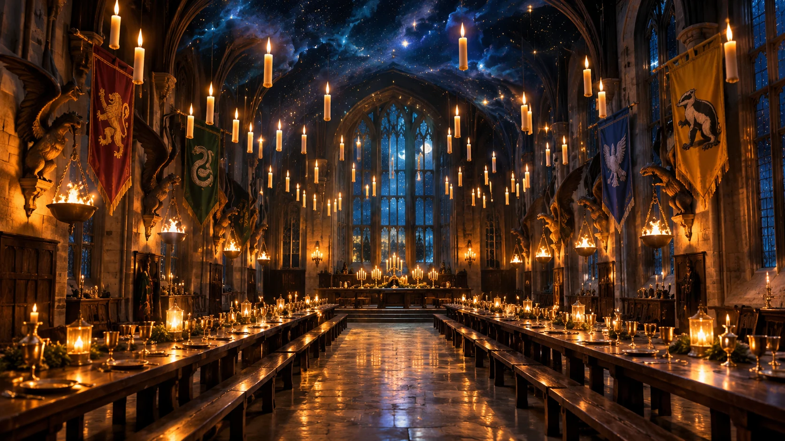
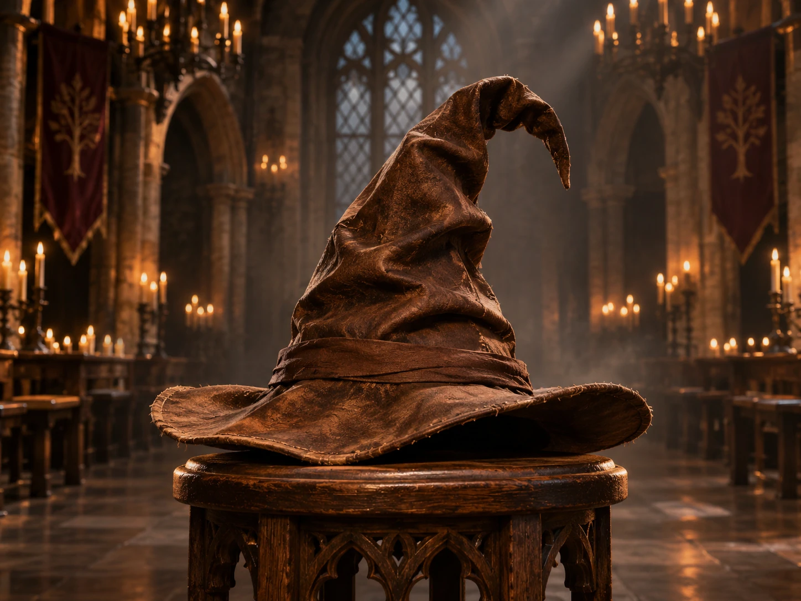

Хогуортс
Уважаеми бъдещ ученико,
Имаме удоволствието да Ви поканим да откриете света на магията.
Приемам поканата
SCOTLAND · A THOUSAND YEARS OF MAGIC
Beyond the Castle
Училище за магия и вълшебство
01 / THE INVITATION
Някои истории започват с писмо.
Твоята те очаква.
Един печат. Едно обещание.
Един свят, който предстои да откриеш.

Уважаеми бъдещ ученико,
Имаме удоволствието да Ви поканим да откриете света на магията.
Приемам поканата02 / THE JOURNEY
Пътят към Хогуортс започва с едно необикновено пътуване през шотландските планини.

02.2 / THE THRESHOLD
От брега на езерото до старинните порти, всяка крачка разкрива нова част от света на магията.


02.3 / THE GREAT HALL
Тук започва една история,
която продължава векове.
03 / THE HISTORY
Хогуортс е измислено училище за магия от света на Хари Потър, създаден от Дж. К. Роулинг.
Училището е основано преди повече от хиляда години от четирима магьосници: Годрик Грифиндор, Хелга Хафълпаф, Роуина Рейвънклоу и Салазар Слидерин. Всеки от тях създава дом, който отразява неговите ценности.
Замъкът Хогуортс е скрит в Шотландия и е известен с подвижните си стълби, тайните проходи и вълшебните портрети. Учениците пристигат с експреса Хогуортс и прекарват седем години в изучаване на магия. Голямата зала е мястото за празници и церемонии.
В историята на Хогуортс особено място заема Албус Дъмбълдор — директор на училището и основател на Ордена на феникса. Той е важен наставник на Хари Потър и участва в борбата срещу Лорд Волдемор. За Хари Хогуортс се превръща в дом, където открива приятелства и постепенно опознава магическия свят.
FROM THE SCHOOL ARCHIVE
| Основано | Около X век |
|---|---|
| Местоположение | Шотландия (измислено място) |
| Основатели | Четирима магьосници |
| Обучение | 7 години |
| Девиз | Draco dormiens nunquam titillandus |
04 / THE FOUR HOUSES
Различни ценности, споделена история.
Къде ще откриеш своето място?

Годрик Грифиндор
Смелост и решителност
Домът на онези, които намират смелост да постъпят правилно дори когато е трудно.

Салазар Слидерин
Амбиция и находчивост
Домът на целеустремените, които виждат възможности и търсят свой път към успеха.

Роуина Рейвънклоу
Мъдрост и любознателност
Домът на любопитните умове, за които всеки въпрос е начало на ново откритие.

Хелга Хафълпаф
Лоялност и трудолюбие
Домът на верните приятели, които ценят честността, търпението и общите усилия.

05 / MAGICAL EDUCATION
Между страниците на старите книги всяко откритие води към следващото.
06 / THE SORTING CEREMONY
Разпределителната шапка ще ти помогне да откриеш своя дом. Пет въпроса. Следвай интуицията си.

Въпрос 1 от 5
Тестът е учебна демонстрация,
не официално разпределение.